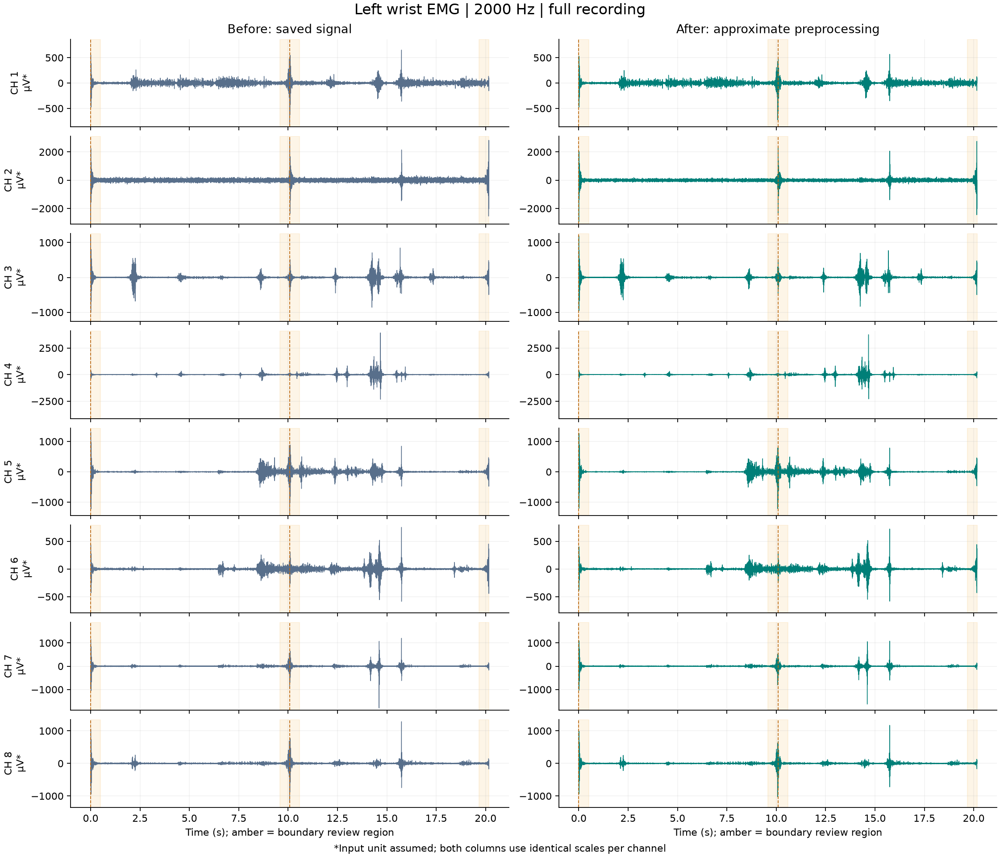
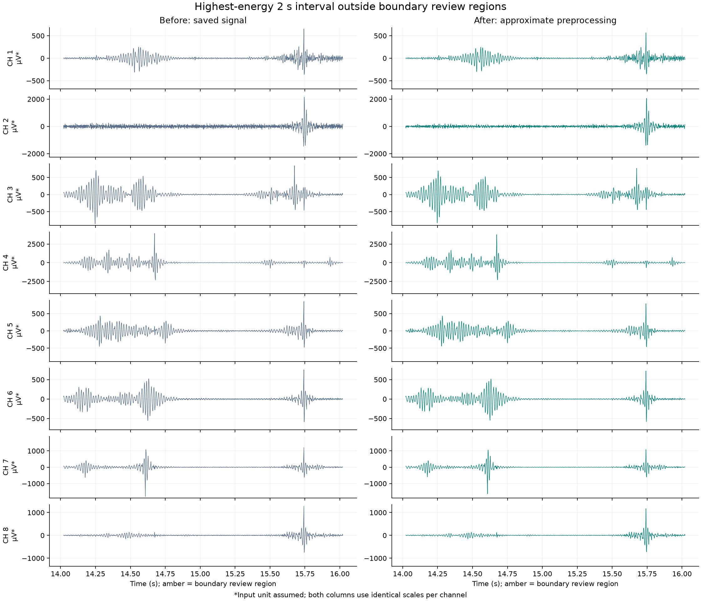
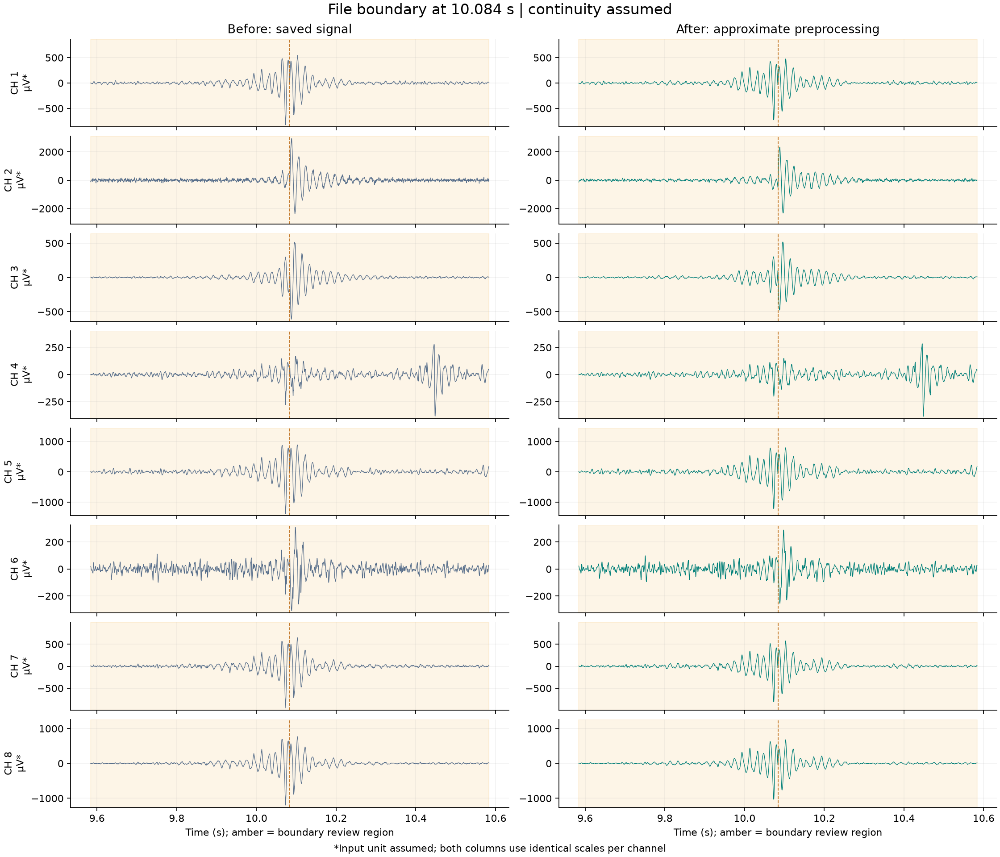
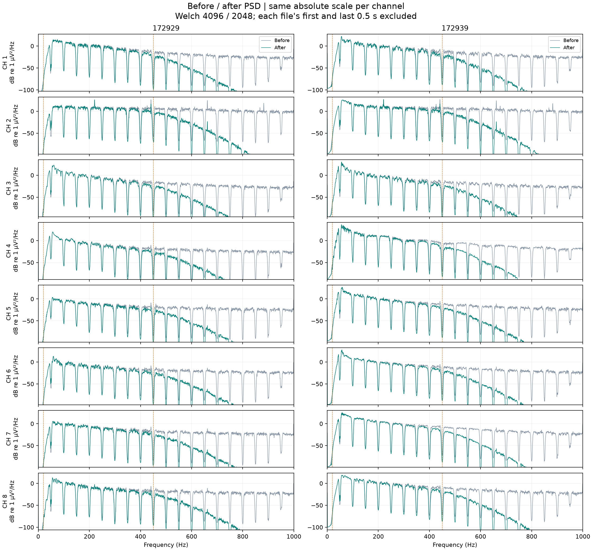
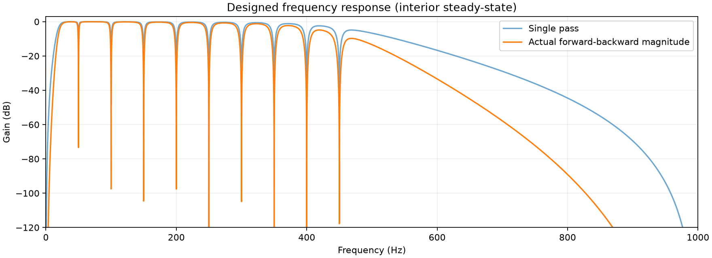
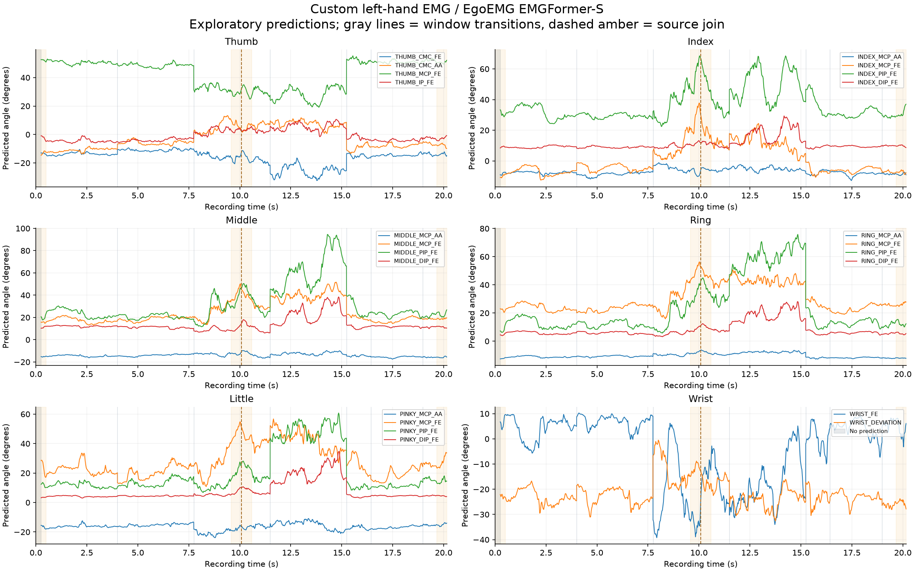

如何得到这些结果
- 四阶 20 Hz 高通与 450 Hz 低通，50–450 Hz 每隔 50 Hz 陷波，Q=30；整段双向零相位滤波。
- 按 μV 转 mV，使用官方左手训练统计量归一化，保持 8 通道原顺序。
- 6 个 4 秒重叠窗口覆盖整段，使用官方时间对齐方法，重叠处取平均。
- 保留完整 22 维预测，无额外幅值修正、角度裁剪或时序平滑。视频帧率与插值时间轴不代表独立预测频率。
用 EgoEMG EMGFormer-S 预训练模型，观察这段自采左手肌电对应的手指与手腕运动。完整视频、关节角数据和处理前后波形集中展示在这里。
固定视角 · 原速播放 · 全段保留
图中角度单位为度。完整采样时间轴数据可在下方下载。
每个通道的前后波形使用相同纵轴尺度；“处理前”指采集软件保存的信号。
左列为保存信号，右列为本次预处理结果。浅橙区域提示首尾与文件接缝。

14.021–16.021 秒，观察滤波前后的细节。

10.084 秒附近；按两文件连续采集的假设拼接。

按通道和源文件比较，使用共同的绝对功率尺度。

20–450 Hz 频段处理，加 50 Hz 及其谐波陷波。

按五指与手腕分组。灰色竖线标记窗口变化；无真实标签，不计算姿态准确率。

CSV 提供完整时间轴、弧度和度数，无预测区域留空；NPZ 另含每个窗口的原始输出、覆盖次数与边界提示。仅发布预测与图表，不发布原始采集文件。